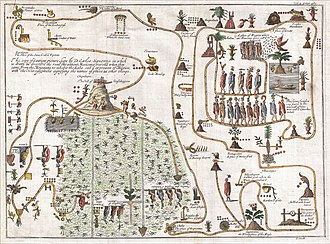
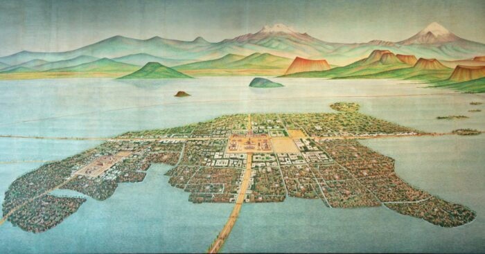
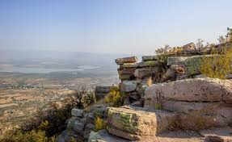
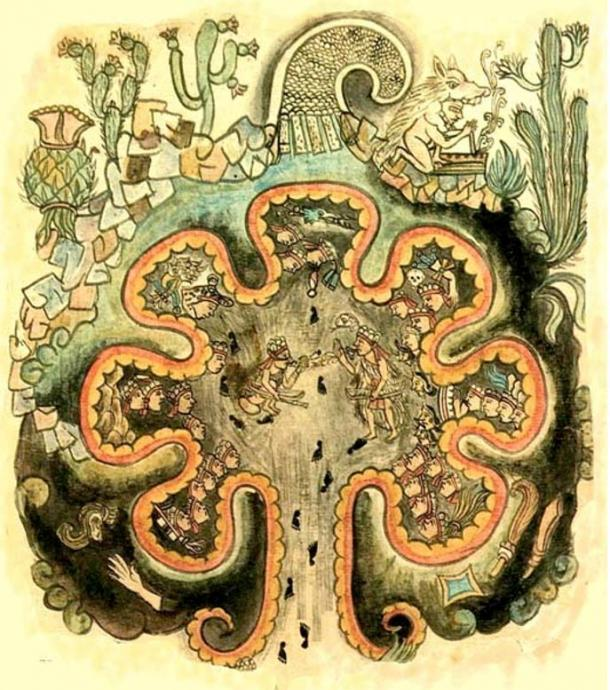

AZTLAN

Introduction
Aztlán, is the mythical ancestral homeland of the Aztecs, the indigenous peoples of Mexico. Aztlán, directly translated from the Nahuatl language means “land of the heron,” and was said to be an idyllic place where the Aztecs lived in immortality and abundance. Many people believe that Aztlán is located in what is presently the southwestern United States.
The Aztlán Empire was an oceanic state centered on the Aztlán Archipelago, west of the Southern Dark Continent (Africa). It controlled much of the continent's southern coast and the seas of the southern New World. It was the homeland of the Azteca people and was ruled by the Ten Tlatoani, including the Tlanixtli prince Xipel Tonalzintli and his younger sister Citlalic Metztli Tonalzintli of the Tonalzintli tribe. The current Tlatoani was their father, Moctezuma Itzcoatl Tonalzintli.
Aztlan has different translations depending on the source. Some believe it derives from the Nahuatl words “aztatl” (heron) and “tlan” (place of). These sources interpret the name as either “Place of Whiteness” or “Place of Reeds.” Other sources suggest it simply means “the land of the Aztecs.”
Literary
According to legend, it was from Aztlan that the forebears of the Aztecs, the Mexica, embarked on a centuries-long migration. This migration eventually led them to the Valley of Mexico, where they founded the capital of the Aztec empire, Tenochtitlan.
According to the various Mexica versions of the stories, their homeland Aztlan was a luxurious and delightful place located on a large lake, where everyone was immortal and lived happily among abundant resources. There was a steep hill called Colhuacan in the middle of the lake, and in the hill were caves and caverns known collectively as Chicomoztoc, where the ancestors of the Aztec lived. The land was filled with vast quantities of ducks, herons, and other waterfowl; red and yellow birds sang incessantly; great and beautiful fish swam in the waters and shade trees lined the banks.
Aztlan was a source of fascination for the Aztecs themselves. The Spanish chroniclers and codexes report that the Mexica king Moctezuma Ilhuicamina (or Montezuma I, ruled 1440–1469) sent an expedition to search for Aztlan. Sixty elderly sorcerers and magicians were assembled by Moctezuma for the trip, and given gold, precious stones, mantles, feathers, cacao, vanilla, and cotton from the royal storehouses to be used as gifts to the ancestors. The sorcerers left Tenochtitlan and within ten days arrived at Coatepec, where they transformed themselves into birds and animals to take the final leg of the journey to Aztlan, where they re-assumed their human form.
At Aztlan, the sorcerers found a hill in the middle of a lake, where the inhabitants spoke Nahuatl. The sorcerers were taken to the hill where they met an old man who was the priest and guardian of the goddess Coatlicue. The old man took them to the sanctuary of Coatlicue, where they met an ancient woman who said she was the mother of Huitzilopochtli and had suffered greatly since he left. He had promised to return, she said, but he never had. People in Aztlan could choose their age, said Coatlicue; they were immortal.

The reason the people in Tenochtitlan were not immortal was that they consumed cacao and other luxury items. The old man refused the gold and precious goods brought by the returnees, saying "these things have ruined you," and gave the sorcerers waterfowl and plants native to Aztlan and maguey fiber cloaks and breechcloths to take back with them. The sorcerers transformed themselves back into animals and returned to Tenochtitlan.
Although Aztlan has never been physically identified, it has been described as an island. Rather than an island in the sea, it is an island upon a lake. Scholars have made many attempts to locate Aztlan, in hopes of finding the place where the Aztecs, later known as Mexica, originated. Some have argued that the search for Atlantis and the search for Aztlan are one and the same, as these are simply two different names for the same land. However, this has been disputed, and many scholars searching for Aztlan believe it to be a separate land from the lost city of Atlantis
The Mexica lived in Aztlan and were ruled over by a Good King and a Bad King . One day the Bad King leaped into the air and became a snake to kill the Good King. The Good King went into the air and converted himself into an Eagle, caught the Bad King, landed on a Cactus and ate him. He then flew south. This is the legend of Quetzalcoatl. Quetzals are birds worshippe Meso American Indians and the word Cuate comes from the word Coatl or snake because they believed they traveled in pairs. It is not the Feathered Serpent but actually the divine twins. Ying and yang, black and white, ...the Aztecs or Mexica as they called themselves were left without leadership. The legends goes on that a space entity impregnated a Mexica women born of nobility, the baby was so Hideous when it was born the people attack it, and he dispatched them with a light beam weapon, they named him Xichlopotztli and named their guard of war. He told the people they had to leave Aztlan and migrate south until they came upon the vision of an Eagle eating a Snake on a cactus
Location
UTAH.UNITED STATE
The modern-day term describing "Aztlan" is that of the former regions in America that the Mexican Empire has controlled and have a massive Latino American diaspora. During the 1950s, Civil rights movements from all over America were demanding equality within the country, Latino Americans created their own movement, the Chicano movement. The Chicano movement wanted to create a breakaway state of America, called "Aztlan", compromising of California, Nevada, Utah, Colorado, New Mexico, Arizona and Texas. Since the Chicano movement's slow disillusion, the idea of Aztlan is not really popular
The Dillmans, a family of treasure hunters, have been searching for Aztec gold for decades. They believe Aztlan is somewhere in Utah. As a result of the Mexican-American War, Mexico ceded a vast territory to the U.S. in 1848. This included present-day California, Arizona, New Mexico, Texas, and parts of Colorado, Nevada, and Utah
According to the Dillman family, there is evidence of linguistic similarities between tribes in Utah and the Aztecs. Some linguists agree that there are at least small similarities between indigenous groups in Utah and the Aztecs. Nahuatl was spoken in some parts of the southwestern United States. In Utah, the main language was Numic. Nahuatl and Numic belong to the Uto-Aztecan language family. However, research into a linguistic connection is limited.
There is a town in Wisconsin named Aztlan, because they believed that it might have been the origin of the Aztecs. There were pyramids made of earth, but they were destroyed.
Island of Mexico

Some Mexican intellectuals suggested that the island of Mexcaltitán de Uribe could be Aztlan. A tiny island city in the Mexican state of Nayarit, it has a vibrant fishing culture but there is no physical evidence to back up this claim
During the 1960s, Mexican intellectuals began to seriously speculate about the possibility that Mexcaltitán de Uribe in Nayarit was the mythical city of Aztlán. One of the first to consider Aztlán being associated with the island was historian Alfredo Chavero towards the end of the 19th century. Historical investigators after his death tested his proposition and considered it valid, among them Wigberto Jiménez Moreno. This hypothesis is still debated

Aguascalientes. Mexico
This research suggests that the mythical Aztlán—the place of origin of the Nahua people—could have been located in the current region of Aguascalientes, Mexico. The proposal is based on an interdisciplinary approach that brings together archeology, toponymy, rock art, Mesoamerican worldview, and analysis of sacred landscape.
The studied area shows cultural evidence between the 6th and 12th centuries AD, within the Epiclassic to early Postclassic period, with possible older elements not yet formally dated. Aguascalientes functioned as a point of multicultural convergence, articulating traditions from the Central Highlands, the West, the North and the Chichimec regions, which reinforces its character as a symbolic and ceremonial crossroads.
evidence Cerro del Muerto as axis mundi or celestial marker.Vestiges of ancient lakes, tulares and herons, symbols linked to Aztlán in codices. Horned snakes in rock art, powerful and uncommon iconography. Ritual ceramics, effigy vessels, masks, and deformed skulls, reflections of ritual practices and social distinction. Toponyms and symbols such as Maji Awi ("water chan") that refer to water as a cosmic center. A possible connection with the myth of Chicomoztoc, the place of the seven caves.

Research
Description
The legend describes Aztlan as fertile and prosperous. Variously described as an island or region, it was north of the Mexica’s eventual settlement in the Valley of Mexico. On their journey, the Mexica were guided by Huitzilopochtli, the god of war and the sun. They moved south from Aztlan, searching for a sign that would indicate where they should establish their capital city. This sign was prophesied to be an eagle perched on a cactus with a snake in its beak. This image later became the symbol of Mexico.
To the Aztecs, Aztlan was a utopia. People there were immortal and able to choose how old they would like to appear to others. It had abundant ducks, fish, herons, maize, and beans. According to legend, seven tribes (the Mexica, Chalca, Acolhua, Tepaneca, Tlahuica, Tlaxcalan, and Xochimilca) lived in seven caves in a place called Chicomoztoc. While Aztlan is the homeland, Chicomoztoc is the origin place.
The Aztlan Empire is centered on the Aztlan Archipelago, a large tropical island chain in the Southern Sea between the Ku and Rim Empires, west of the Dark Continent and south of the northern New World. Only one dungeon in the archipelago has been conquered by the Tlanixtli: the Dungeon of Helil, home of the light elf, Helil the Morning Star. Aztlan is known for its advanced technology and magical prowess, incorporating magic into its technology. As a result, it is the only nation to mass-produce steam power and air travel. They utilize steam-powered airships and gliders, as well as steam-powered naval vessels. They have access to gunpowder and other explosives, and are rumored to have used internal combustion engines, advanced rockets, or jet propulsion. Their soldiers are armed with firearms of various sizes and are skilled in hand-to-hand combat as well as offensive magic. They often wear colorful geometric tunics and fringed costumes often decorated with beads and feathers, with some even sporting ornate feathered headdresses.
System The Empire is ruled primarily by the Ten Tribes, each tribe is ruled by a Cuauhtlatoani or King and the Tlatoani or Emperor is selected among the Princes among the Ten Tribes as their Potential Heirs. A new Tlatoani is selected among the potential heirs once the older Tlatoani dies..
People

In Aztlán, the myth goes, the Mexica ancestors dwelled in place with seven caves called Chicomoztoc (Chee-co-moz-toch). Each cave corresponded to one of the Nahuatl tribes which would later leave that place to reach, in successive waves, the Basin of Mexico. These tribes, listed with slight differences from source to source, were the Xochimilca, Chalca, Tepaneca, Colhua, Tlahuica, Tlaxcala, and the group who were to become the Mexica
Oral and written accounts also mention that the Mexica and the other Nahuatl groups were preceded in their migration by another group, collectively known as Chichimecas, who migrated from the north to Central Mexico sometime earlier and were considered by the Nahua people less civilized. The Chichimeca apparently do not refer to a particular ethnic group, but rather were hunters or northern farmers in contrast to the Tolteca, the city dwellers, the urban agricultural populations already in the Basin of Mexico.
At Aztlan, the people fished from canoes and tended their floating gardens of maize, peppers, beans, amaranth, and tomatoes. But when they left their homeland, everything turned against them—the weeds bit them, the rocks wounded them, and the fields were filled with thistles and spines. They wandered in a land filled with vipers, poisonous lizards, and dangerous wild animals before reaching their home to build their place of destiny, Tenochtitlan.